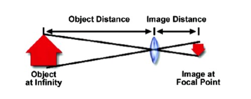
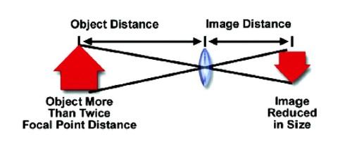
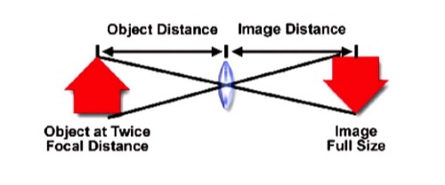
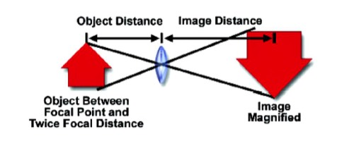
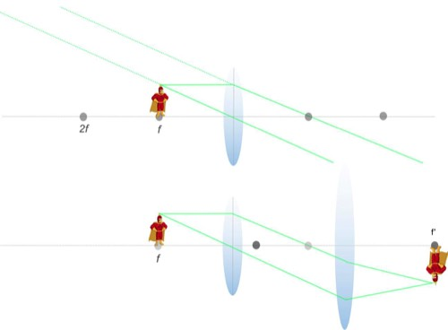

Lenstheorie
Om inzicht te krijgen in hoe de lenzen van een microscoop functioneren, moet men een reeks basisprincipes van de werking van lenzen bij de beeldvorming voor ogen houden. Licht afkomstig van een object dat ver verwijderd is (op oneindig) van de voorkant van een convexe lens, zal scherp gesteld worden op een vast punt achter de lens (= het FOCAAL PUNT of brandpunt van de lens (Fig. 1)). Het brandpunt ken je wel van het principe van een ‘brandend glas’ dat de hoofdzakelijk evenwijdige stralen van de zon kan focusseren om een gat in een blad papier te branden.

Fig 1. Object (= rode pijl) op oneindig. Het beeld is kleiner geworden.
Het verticaal vlak waarin het focaal punt ligt is het FOCAAL VLAK. De afstand tussen het centrum van een perfecte, enkelvoudige convexe lens en het focaal vlak noemen we de FOCALE AFSTAND (bij een perfect vervaardigde dunne convexe lens is deze afstand voor of achter de lens identiek).
Het BEELD van ons object verschijnt nu op het focaal vlak. Het BEELD is kleiner dan het object en is omgekeerd. Het is een echt beeld dat kan vastgelegd worden op film of met een ander beeldvormingsapparaat, bv. een CCD-camera. Deze situatie gaat op voor de camera die gebruikt wordt bij normale fotografie.
Wanneer het object dichter bij de voorkant van de lens gebracht wordt, maar zich nog steeds meer dan twee focale lengtes voor de lens bevindt, dan vinden we het beeld verder achter de lens terug (Fig. 2). Het beeld is groter dan in situatie 1, maar nog steeds kleiner dan het werkelijke object. Het beeld is omgekeerd en waarheidsgetrouw. Deze situatie is van toepassing voor normale portretfotografie.

Fig 2. Het object bevindt zich op een afstand van meer dan tweemaal de focale lengte. Het beeld is kleiner dan het object.
Wanneer het object op een afstand wordt gebracht die tweemaal de focale afstand bedraagt, bevindt het beeld zich op twee focale lengtes achter de lens (Fig. 3). De grootte van het beeld is nu identiek aan die van het object. Het beeld is waarheidsgetrouw en omgekeerd. Deze situatie vinden we terug bij de zogenoemde 1:1-fotografie.

Fig 3. Object op een afstand van 2x de focale lengte. Beeld op werkelijke grootte
Wanneer het object gepositioneerd is voor de lens tussen 1x en 2x de focale lengte, is het beeld nu nog steeds verder weg van de achterkant van de lens, maar wordt het beeld vergroot en is het dus groter dan het object; het is nog steeds omgekeerd maar waarheidsgetrouw (Fig. 4). Deze situatie wordt gebruikt voor alle objectieven met een vaste tubuslengte (optiek op eindig) die gebruikt worden in de microscopie. Dergelijke objectieven projecteren een reëel, omgekeerd, vergroot beeld in de tubus van de microscoop dat scherpgesteld wordt op het vlak van het vast diafragma van het oculair.

Fig 4. Object dichter dan 2x de focale lengte. Vergroot beeld.
Wanneer het object zich op het voorste focaal vlak van de convexe lens bevindt zullen de lichtstralen evenwijdig de lens verlaten (Fig. 5).
Als het beeld nu door het oog wordt scherp gesteld, zal dit beeld zich op DEZELFDE kant van de lens als het object bevinden en rechtop waargenomen worden. Het is een virtueel beeld dat wordt waargenomen alsof het zich 25cm van het oog bevindt. Het principe is hetzelfde als dat van een enkelvoudig vergrootglas. De vergroting is afhankelijk van de kromming van de lens.
Deze situatie beschrijft de werking van het oculair in een microscoop.
Voor een microscoop met oneindige lenzensystemen is het object of specimen precies gepositioneerd op het voorste focaal vlak van het objectief. Het licht verlaat de lens dan in evenwijdige stralen. Om dergelijke stralen terug te convergeren dient er een TUBUSLENS in het lichtpad (zie samengestelde microscoop) tussen het objectief en het oculair geplaatst te worden, waardoor het licht terug kan focusseren en een beeld kan worden gevormd.
Als het beeld nu door het oog wordt scherp gesteld, zal dit beeld zich op DEZELFDE kant van de lens als het object bevinden en rechtop waargenomen worden. Het is een virtueel beeld dat wordt waargenomen alsof het zich 25cm van het oog bevindt. Het principe is hetzelfde als dat van een enkelvoudig vergrootglas. De vergroting is afhankelijk van de kromming van de lens.
Deze situatie beschrijft de werking van het oculair in een microscoop.
Voor een microscoop met oneindige lenzensystemen is het object of specimen precies gepositioneerd op het voorste focaal vlak van het objectief. Het licht verlaat de lens dan in evenwijdige stralen. Om dergelijke stralen terug te convergeren dient er een TUBUSLENS in het lichtpad (zie samengestelde microscoop) tussen het objectief en het oculair geplaatst te worden, waardoor het licht terug kan focusseren en een beeld kan worden gevormd.

Fig 5. Voorbeeld van een objectief op oneindig. Een beeld wordt pas gevormd als de tubuslens in de lichtweg wordt geplaatst.